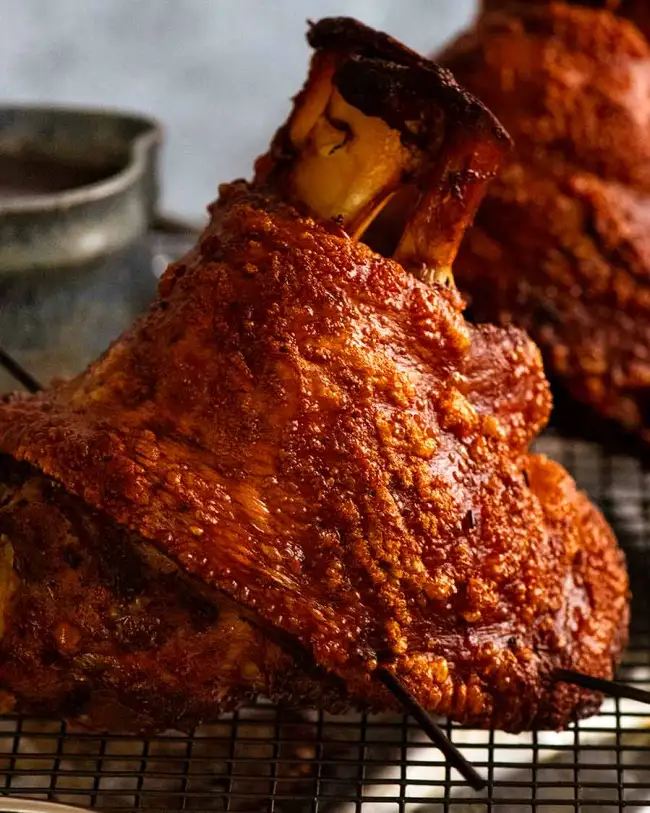

Crispy German Pork Knuckle

Cripsy Knuckle!
Pork Knuckle – sometimes called Pig Knuckle – is as Bavarian as Oktoberfest, lederhosen and BMW. Called Schweinshaxen, these mighty hunks of roasted pork hock are a fixture of pubs and beer halls in Munich and this part of Germany, as well as nearby Austria.
Always served in a puddle of dark and malty beer gravy, Pork Knuckle is loved by Germans for its juicy, lip-smackingly rich meat on the bone, all wrapped in a sheath of golden crackling that shatters under a knife.
Ingredients
- Pork Knuckle
- garlic
- Vinegar
- beer
- Salt
- Black peppers
Process
Part one
- Prick skin – Poke lots of small holes all over the Pork Knuckle’s skin using a small, sharp knife or even a pin (eg. safety pin, sewing pin). Around 100 or so. Really. Lots and lots! The more holes you prick, the more crackling “bubbles” you will end up with – and bubbles are good! No holes = flat and hard crackling = chipped teeth!
- Brush flesh with vinegar – Brush or rub 1 tablespoon of the vinegar on the pork flesh, including inside any cracks or crevices, and under the skin where it meets the flesh (but do not peel skin back). See above in the ingredients section for why we apply vinegar.
- Stud with garlic: Make shallow incisions in the exposed pork flesh only with a small knife then stuff with the garlic slivers. This is to add flavour into the flesh;
- Rub seasoning over pork: Rub pork skin with olive oil. Then rub the seasoning mix all over the pork – on the flesh, skin, and getting it into all the cracks and crevices.
- Leave overnight: Place pork upright on a plate, then leave uncovered in the fridge overnight. The purpose of this is twofold. Firstly, to “marinate” the pork knuckle to get the seasoning flavours into the flesh as well as the salt. Secondly, to dry out the skin to ensure we get that awesome crispy crackling!
- Slow-roast 2 hours 10 minutes – Roast for around 2 hours 10 minutes at 180°C / 350°F (160°C fan), rotating the tray halfway, or until the internal temperature in the thickest part reaches 85°C / 185°F. Having a meat thermometer really helps here to achieve the ideal cook time for the flesh. Pork knuckle meat is actually not that fatty or uniformly rich with connective tissue, so if you cook it excessively it can begin to lose juiciness in parts.
Part two - Make that Crispy Pork Knuckle crackling!
- Crank up heat! – Transfer the knuckle to a separate tray, and increase the oven to 260°C / 500°F (240°C fan). Crackling needs a super-hot oven! The liquid in the roasting pan at this stage should be reduced, and just needs to be thickened to make the Beer Gravy – see Part 4 below;
- Brush skin with vinegar – Brush the skin with half the remaining 1 tbsp of vinegar. See above in ingredients section for the purpose of the vinegar. Don’t worry! Brushing with vinegar doesn’t affect the crispiness of the skin. We only brush on a bit and the high heat of the oven evaporates it quickly;
- Blast it! Put the knuckle in the oven for 30 minutes, rotating tray halfway and brushing with remaining vinegar at this point.
- And now, swoon … The skin should be crispy all over, deep golden and mostly covered with beautiful, tiny bubbles. It will be near-perfect – as perfect I believe as you can get crackling with pork knuckle!